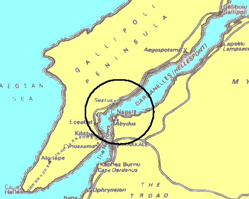

Decelean War
After Alcibiades fled to Sparta, Nicias was left alone, and he decided they needed to attack someone, Syracuse. However, Syracuse appealed to his ally, Sparta, and Sparta sent one man: Gylippus, an old Spartan general who helped the Syracusians organize and defend themselves. The Athenians lost embarrassingly, and the entire Athenian force was either captured or killed. As a result, many members of the Delian League revolted and Sparta redeclared war to Athens, beginning the second phase of the Peloponnesian War. The Decelean War lasted from 413 B.C. to 404 B.C. Sparta, however, had a different strategy this time thanks to Alcibiades. They took over a small city called Decelea and made it a permanent Spartan base. Alcibiades also suggested them to create a navy to defeat Athens, which led them to made a deal with Persia for money in exchange of Ionia. In the meantime, Athens was desperately trying to build up their fleet, but they ere not interested in the political trouble. Therefore, a group of wealthy people in Athens overthrew democracy and reinstalled oligarchy in 411 B.C., with plans to surrender the city to Sparta. Eventually, however, democrats took over again.
The Spartan navy, following Alcibiades’ advice, brought their navy and blocked the Hellespont (a narrow, 65 kilometer water passage between the Aegean Sea and the Sea of Marmara). Suddenly, the Athenians began to win a variety of naval victories; they even destroyed the Hellespont blockade. Then, Sparta proposed the Athenians a truce but these refused; they wanted to keep the war going. Sparta had no choice but to ask Persia for more money. Then Lysander came into play!